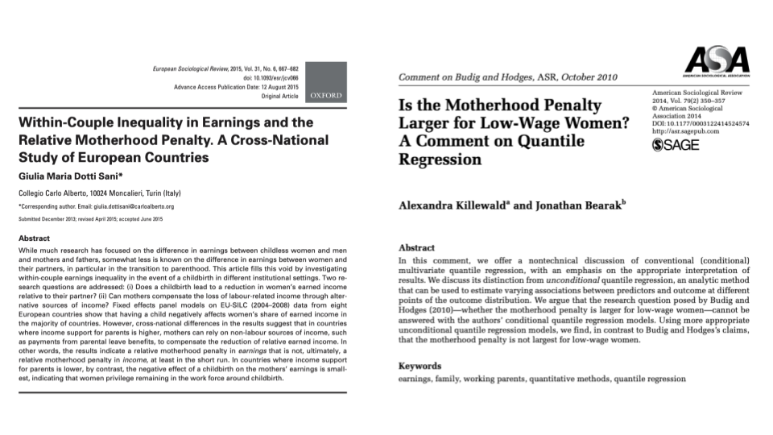
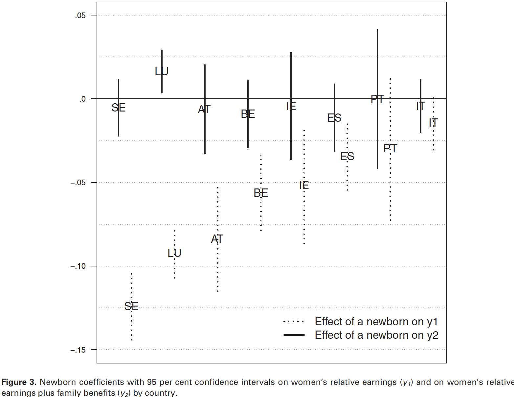
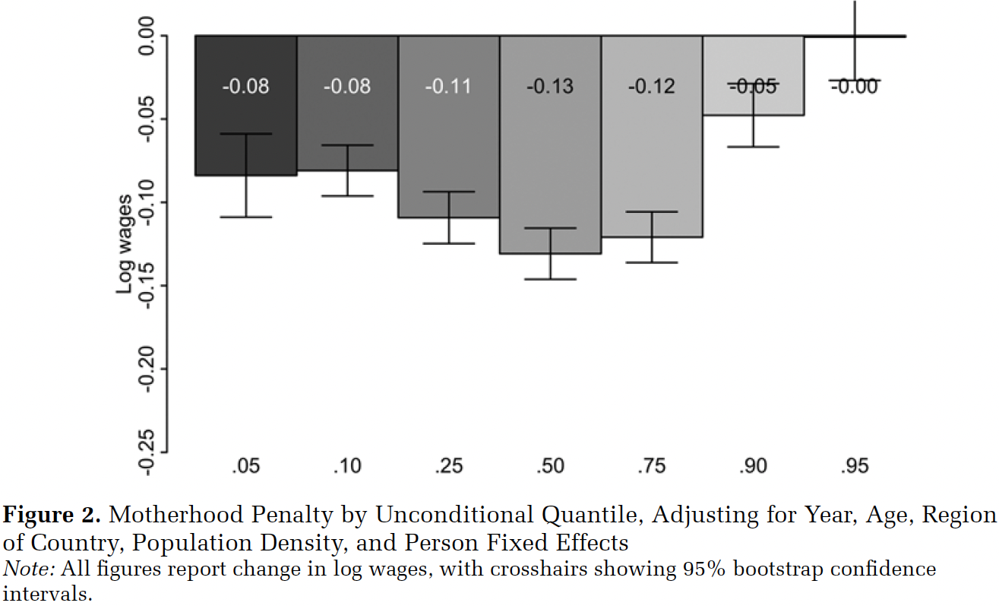

Penalidad por maternidad en los ingresos: evidencia y métodos
Andreas Laffert1,2
1Instituto de Sociología, Pontificia Universidad Católica de Chile
2Centro de Estudios de Conflicto y Cohesión Social - COES
Seminario Estratificación Social - SOL3016
1 Octubre 2025, Santiago
Textos

Antecedentes
Antecedentes
La literatura muestra una penalidad por maternidad: las madres suelen ganar menos que las mujeres sin hijos (Budig & England, 2001; Waldfogel, 1998).
Budig & Hodges (2010): la penalidad es mayor para las mujeres de bajos salarios → evidencia con conditional quantile regression (CQR).
Sin embargo, la penalidad no es uniforme: puede variar según posición en la distribución salarial, contexto institucional o régimen de bienestar.
En Europa, la transición a la maternidad también genera una penalidad relativa dentro de la pareja, que puede compensarse con beneficios familiares (Dotti Sani, 2015).
Ejes de análisis
Los dos estudios ponen a prueba hipótesis rivales sobre cómo y dónde opera la penalidad maternal:
Desigualdad en el mercado laboral (Killewald & Bearak, 2014)
- ¿La penalidad es mayor para mujeres con bajos salarios (como decía Budig & Hodges)?
- O, por el contrario, ¿afecta más a las de la mitad de la distribución salarial?
Desigualdad dentro del hogar (Dotti Sani, 2015)
- ¿El nacimiento de un hijo reduce el peso económico de la mujer frente a su pareja?
- ¿Los beneficios familiares pueden compensar la pérdida de ingresos laborales?
Dotti Sani (2015)
Objetivo: Analizar si el nacimiento de un hijo reduce los ingresos laborales de las mujeres en relación con los de su pareja, y hasta qué punto los beneficios familiares compensan esta pérdida.
Datos: panel EU-SILC (2004–2008) de ocho países europeos (Austria, Bélgica, España, Irlanda, Italia, Luxemburgo, Portugal y Suecia).
Mediciones:
- Ingreso relativo de la mujer en la pareja: participación en ingresos laborales (y₁).
- Ingreso relativo ampliado: ingresos laborales + beneficios familiares (y₂).
- Controles: individuales (ej. edad, horas trabajadas) y contextuales (ej. régimen bienestar)
Estrategia: modelos de efectos fijos (FE) → estiman el impacto de un nacimiento (niño 0–1 años en el hogar) sobre el ingreso relativo de la madre.
Dotti Sani (2015)
- Hallazgos:

Dotti Sani (2015)
Contribuciones:
- Evidencia de una penalidad relativa de maternidad en la mayoría de países, pero compensada por beneficios familiares en Estados con apoyos generosos (Suecia, Luxemburgo)
- En países del sur de Europa (Italia, Portugal, España), la reducción es mínima, ya que las madres tienden a permanecer en la fuerza laboral.
- Propone distinguir entre penalidad en ingresos laborales vs. penalidad en ingresos totales, mostrando que la primera no siempre implica la segunda.
Killewald & Bearak (2014)
Objetivo: Evaluar si la penalidad por maternidad es mayor para mujeres con bajos salarios, como plantearon Budig & Hodges (2010) con CQR, pero ahora usando UQR.
Datos: panel de mujeres blancas, NLSY79 (1979–2004).
Mediciones:
- Salarios: log de salarios transformados con RIF
- Maternidad: dummy 0 = no madre, 1 = madre
- Controles: edad, region, densidad poblacional y FE individuales
Estrategia: Unconditional Quantile Regression (UQR) → permite estimar la penalidad en distintos puntos de la distribución salarial sin redefinir los cuantiles por covariables (a diferencia de CQR).
Killewald & Bearak (2014)
- Hallazgos:

Killewald & Bearak (2014)
Contribuciones:
- Budig & Hodges (2010) preguntan: ¿Qué madres enfrentan la mayor penalidad salarial? → concluyen que son las de bajos salarios.
- Killewald & Bearak (2014) muestran que esta pregunta no puede responderse con CQR, ya que mide diferencias condicionales, no sobre la distribución salarial total.
- Usando UQR, encuentran que la penalidad es más fuerte en la parte media de la distribución salarial, y menor en los extremos (bajos y altos salarios).
Diálogo entre las investigaciones
| Aspecto | Killewald & Bearak (2014) | Dotti Sani (2015) |
|---|---|---|
| Unidad de análisis | Mujeres y salarios individuales | Parejas: mujer vs. varón |
| Pregunta | ¿Dónde es mayor la penalidad salarial? | ¿Cambia el peso económico de la mujer? |
| Datos / Método | EE.UU., NLSY79, UQR | 8 países UE, EU-SILC, FE |
| Hallazgos | Penalidad mayor en la mitad de la curva | Penalidad relativa, compensada por BF |
| Similitudes | Ambas estudian penalidad maternal, no uniforme | Enfatizan heterogeneidad por contexto |
| Encuentros / Desenc. | Corrigen a Budig: no son las de bajos salarios | Beneficios pueden neutralizar penalidad |
| Contribución | Desigualdad entre mujeres | Desigualdad dentro de la pareja |
| Interés sociológico | Escala estructural (mercado laboral) | Escala relacional (hogar) |
Discusión
¿Qué aprendemos sobre la penalidad maternal cuando la miramos en el mercado laboral (entre mujeres) versus dentro del hogar (entre parejas)?
¿Cómo interactúan la posición salarial y los regímenes de bienestar en la producción de desigualdades de género?
Si la penalidad no es “promedio” sino heterogénea, ¿qué implica esto para pensar la justicia social y la equidad de género?